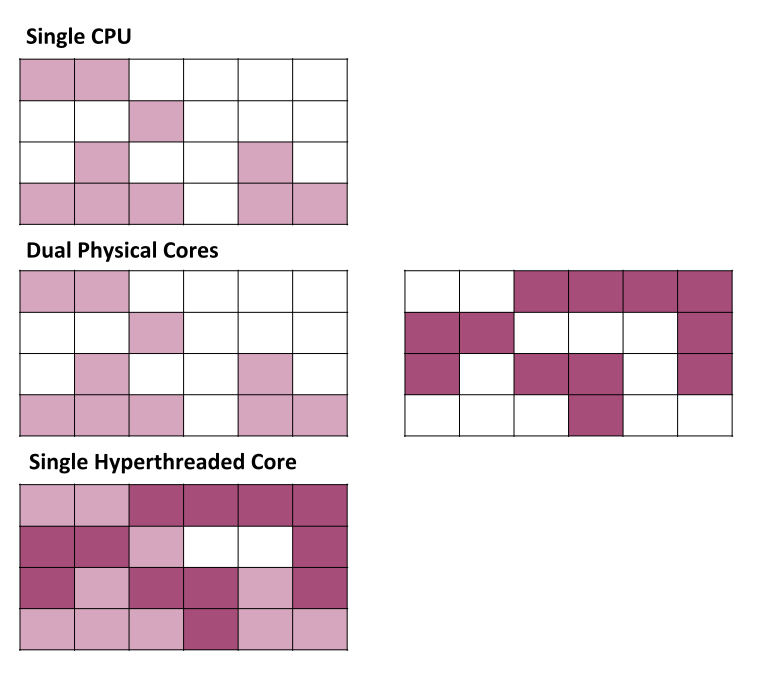
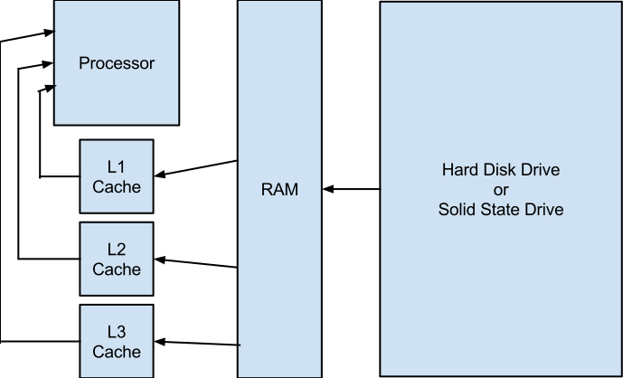
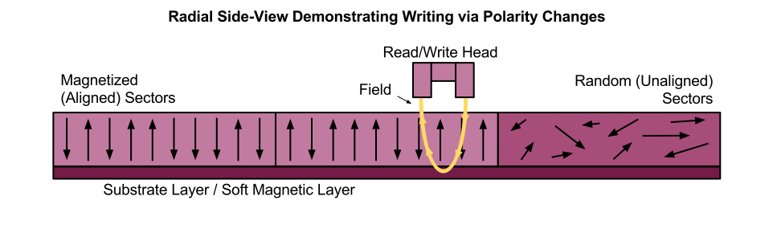
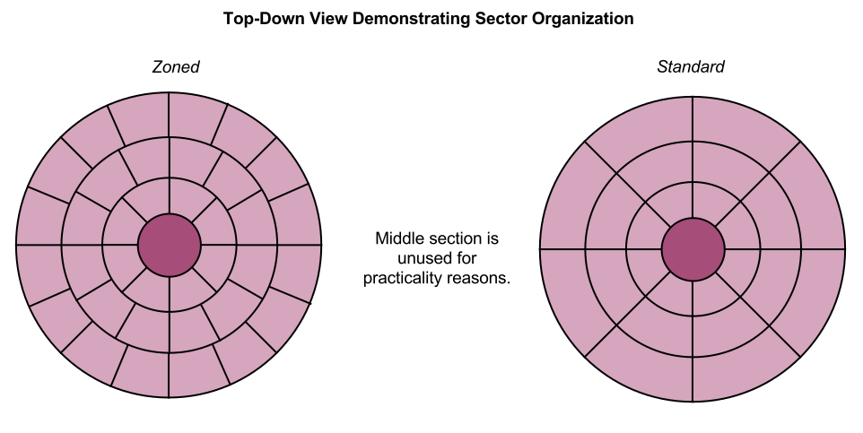

Computers are fancy and that can be overwhelming. For many they're just a magic box that does the email and the Facebooks. However, when broken down they're actually not that difficult to understand. Hopefully this can help explain some things following the chapter layout of Scott Meuller's Upgrading and Repairing PCs - 21st Edition.
Chapter 1Chapter 1 - Basic History
To understand the history of computers, it's important to first realise that a computer is just a tool for making math easier or automatic. As such, their history extends all the way back to abacuses 4000 years ago. Other old tools that could be called computers include Napier's bones and slide rules.
When it comes to more modern, electronic computers, their history begins with the work of mathematician Alan Turing who, in 1936, published a paper entitled "On Computable Numbers." This paper theorized an imaginary computer called the Turing Machine. After this, the first electronic computers were created and used primarily in war to break encryption and calculate trajectories via the use of vacuum tubes acting as on/off switches. These early computers were massive and inefficient. For example, the machine known as ENIAC (Electrical Numerical Integrator and Calculator) took up 1800 sq. ft. of floor space and consumed 180,000 watts of power while needing punchcards to receive input.
Two of the biggest flaws/difficulties of early computers were their lack of programmability and the vacuum tubes. In order to reprogram these computers, they had to be entirely rewired from the inside. This was an obvious efficiency problem which was solved in 1945 when mathematician John von Neumann conceptualized the architecture that allowed a computer to store programs as data. As for the problem with vacuum tubes, they are a glass tube with a heated cathode, a control grid, and a plate inside. If the control grid is given a positive charge, electrons flow from the cathode to the plate (ON) and with a negative charge, electrons are forced back towards the control grid (OFF). These were large and used a lot of power, resulting in high costs and overheating. To fix this problem, the transistor was invented in 1947 by John Bardeen, Walter Brattain, and William Shockley. Transistors function on the same basic idea as a vacuum tube but all components are replaced by silicon mixed with certain impurities (or doped) and a wire to create semiconductors. P-type, or positive due to a lack of free electrons, silicon is doped with boron and N-type, or negative due to an excess of free electrons, silicon is doped with phosphorous. Normally these two types of silicon do not share electrons (OFF) but the application of an electric charge allows electrons to flow (ON), much like a vacuum tube. Unlike a vacuum tube, a transistor is significantly smaller and consumes significantly less power.
With these two advancements, computers have stayed mostly the same while steadily growing in power (Moore's "Law" theorizes that power doubles every 18-24 months, which so far has been very accurate).
Chapter 2Chapter 2 - Component Overview
A computer is comprised of many individual parts which can be split into two categories, hardware and software. Hardware is the physical components and software is purely digital.
Hardware consists of:
| Processor | Performs the calculations that the PC needs in order to do anything. |
| Motherboard | Connects all components of the PC together. |
| Memory (RAM) | Temporarily stores information that the processor needs. |
| Hard Drive | Permanently stores all information on the system. |
| Optical Drive | Allows the system to read removable information stored on CDs, DVDs, or Blu-Ray discs. |
| Power Supply | Provides power to system. |
| Graphics Card* | Specialized additional processor that specifically handles complex visuals. |
| Sound Card* | Specialized additional processor that specifically handles complex audio. |
| Network Card* | Allows the computer to connect to a network either through a wired or wireless connection. |
| Case | Holds all components in place. |
| Monitor | Displays the computer's interface. |
| Keyboard/Mouse | Allows the user to interact with the computer and input commands. |
Also worth mentioning are various peripherals such as speakers, headphones/headsets, printers, scanners, etc.
Software consists of:
| BIOS | The most basic, default software on the computer. |
| Operating System | Serves as a link between hardware and programs. |
Chapter 3Chapter 3 - Processors
The processor is the most important (and as such also the most expensive) component of a computer. It is essentially the brain of the computer, managing all of the calculations the various programs need it to manage. It's important to note that this is all the processor does. It may be the brains of the computer, but it's not exactly smart. Rather, the different memories and programs handle all smartness requirements. Historically, Intel has dominated the processor market, however recently AMD (Advanced Micro Devices) has come to split that market.
To understand the history of processors, we must first understand how a processor's ability to perfrom is measured.
The first number looked at is a value in Hertz which to most people is fairly meaningless other than the idea that a bigger number is better, which is mostly true. Hertz is a measurement of cycles per second or clock speed which, in the case of processors, is determined by the vibration of a quartz crystal. While this is nice information to have, it's not always all that useful because different processors are able to complete different amounts of tasks within a single cycle. Older processors were also able to line up smaller tasks in a "pipeline" which were accomplished more slowly in terms of actions per cycle but compensated with faster clock speeds (however, this used up more power and thus generated more heat, leading to pipelines being replaced by hyperthreading and multicore processors, which will be discussed in detail later). For comparison, the very first microprocessor, the Intel 4004 made in 1971 in order to power a Japanese calculator, ran at a clock speed of 740KHz whereas a modern Intel i7 4790 runs at up to 4.40 GHz (6000x faster).
A second number to look at, though rarely advertised or even kept secret, is how many transistors there are in a given processor. As detailed in the first chapter, a transistor is two types of silicon semiconductors and a wire being used together as an ON/OFF switch. Using these switches as 1's and 0's the processor is able to use data to do whatever it needs to do. Naturally, more transistors means a greater ability to do math. Likewise, being able to put more transistors closer together allows the processor to take up less space. To refer again to the first processor, the Intel 4004 had a transistor count of 2300 spaced 10 microns (1 micron being one one-millionth of a meter) apart while modern processors have transistors counts in the billions spaced 22 nanometers (1 nanometer being one one-billionth of a meter) apart.
Similar to transistor count, another important value is the width of the data (I/O) bus, address bus, and internal registries. The data bus is what allows data to move into and out of the processor (there is often more than one), the address bus refers to the memory location of a piece of data, and internal registries the amount of information the processor can work with at one time. In a modern processor, the data bus is 64 bits wide, the address is 40 bits wide, and new processors have both 32 and 64 bit registries (all of this keeping in mind that one byte of data is composed of eight individual bits). The Intel 4004 had a 4 bit data bus.
Another commonly heard descriptor of a processor is the amount of cores that it has. This refers to modern processors essentially being multiple processors working together to split the load of tasks. This is itself an extension of hyperthreading technology which takes unused portions of a processor and dedicates them to some other task, effectively doing the work of two processors (realistically, the amount of processing power is not doubled, but an increase in 25% or more is common). Today's processors all use multiple cores but vary in whether or not they use hyperthreading. For example, an Intel i7 4790k has four hyperthreaded cores while an AMD FX 9590 has eight non-hyperthreaded cores.
In the case that my explanation has failed, consult this diagram:

A final thing to look at is the cache, a special type of memory that functions as an intermediary between the processor and the main memory in order to let the processor run as fast as it can. In Upgrading and Repairing PCs, this subject is discussed in chapter three. For the purposes of this page, however, the discussion on caches is being rolled into chapter six.
All of these variables make comparing processors difficult. As a result, benchmarks are used run scripts to create an accurate picture of how the processor will perform while doing normal tasks. Unfortunately, benchmarks may also not be accurate because a benchmarking company might not have their benchmark properly optimized equally for different processors.
Chapter 4Chapter 4 - Motherboards
The motherboard is a circuit board that connects all of the various components of the system together. Included on the motherboard are:
- The socket for the processor
- Northbridge and Southbridge chips
- The BIOS chip(s) and battery
- DIMM slots for memory sticks
- Expansion slots for things like video, sound, and network cards
- The sockets for the hard disk and solid state drives
- The sockets for the power supply cables
- The sockets for the optical drives
- The sockets for the fans and other cooling systems
- Various input/output ports including USB, audio, video, and ethernet
Chapter 5Chapter 5 - BIOS
BIOS, which stands for Basic Input/Output System and is also known as device drivers or just drives, is the software that serves as the bridge between the hardware and the operating system. When the computer is powered on, BIOS is what gives the processor its first instructions, checks that all components are functioning (Power On Start Test or POST), and allows the operating system to be loaded and to take over.
Physically, BIOS is stored on a chip of non-volatile read-only memory (ROM, meaning it is either impossible or extremely difficult to write to) attached directly to the motherboard. It is important and perhaps counter-intuitive to note that while the BIOS itself has a manufacturer, any updates or upgrades must be gotten through the manufacturer of the motherboard. This is because the BIOS chip runs a custom version designed to run specifically with that motherboard.
Chapter 6 - MemoryChapter 6 - Memory
Memory is what holds onto data and it comes in a variety of different types. The first important distinction is whether or not that memory is volatile or non-volatile. Volatile memory dumps all data when it loses power, such as caches and main memory sticks, while non-volatile memory holds onto it despite the lack of power, such as flash memory and hard drives. As mentioned in the previous chapter, BIOS is an example of something stored onto flash memory and hard drives will be described in fuller detail in chapter nine. This chapter will focus on
Volatile memory can itself be divided into two categories, dynamic random-access memory (DRAM) and static random-access memory (SRAM), with "random-access" referring to the fact that the date held within can be accessed in any random order (ROM and hard drives are also RAM, but because of their non-volatility they are usually kept to their own seperate designation). Dynamic RAM is dense, meaning that is able to store a lot of data in a small space, as well as cheap, however it is also transfers data quite slowly. By contrast, static RAM is fast, but also takes up a large amount of physical space and is expensive. In order to work around these strengths and weaknesses, DRAM and SRAM both fulfill different roles in a computer.
DRAM is generally what people are referring to when they mention memory and is a set of memory chips on its own board plugged into the motherboard via DIMM slots. This acts as the first set of memory, drawing a copy of the information the processor will need from its permanent location. The DRAM used as main memory in current computers is called DDR3 SDRAM (DDR4 will be available soon, though not likely to be cost efficient any time soon). The S in SDRAM refers to the memory running synchonized with the memory bus. Prior to this change, DRAM ran as quickly as it could which sounds nice, but really it just results in more time waiting. Synchronizing the memory to the bus allows the everything to function at the same time, increasing speeds. DDR, or double data rate, means that instead of transfering data once per clock cycle, the memory moves data twice per cycle. The three is just the designation of the current generation.
SRAM is the processor's caches, usually integrated directly onto the processor die. These act as a second stage of memory in between the main memory and the processor in order to compensate for the main memory not being as fast as the processor. Cache memory is also smarter than main memory, holding onto data that the processor is most likely to need rather than anything it could need. However, the cache does not always correctly guess what the processor will need, forcing the processor to get that information from the slower main memory. This is known as a cache miss and is fairly rare (90% of the time the cache does its job correctly). Regardless of rarity, the processor has three levels of cache memory to prevent the likelihood of a miss, L1, L2, and L3. Each level of cache memory has data the processor is likely to need and, in the event L1 misses, L2 will probably have the correct piece of data. In the event L2 misses, L3 will likely have the information needed. If all three miss then something went horribly wrong and the processor must consult the slow main memory. In the case of multicore processors, each processor has its own L1 and L2 caches while sharing a single L3 cache.
In the case that my explanation has failed, consult this diagram:

Chapter 7Chapter 7 - ATA/IDE Interface
ATA and IDE cables are used to move data from drives.
Chapter 8Chapter 8 - Magnetic Storage Principles
Hard disk drives are the most common means of storing large amounts of information permanently or semi-permanently. The core components of a hard disk drive are a spinning circular platter (although modern hard drives have multiple platters) and a U-shaped read/write head held above the platter. Platters are composed of a substrate made of aluminum or glass and ceramic with a layer of magnetizable material on top while read/write heads are made of conductive metal. Hard drives use the platter and read/write head along with the physics of electromagnetism to store data. The same principle of using magnetization to store data also applies to using tape as storage, a process that was first announced in 1952 and is still used today, although hard disk drives are much more common, especially to an average person.
To understand how electromagnets are used to write and read information, two principles of electromagnetism must be understood. Firstly, an electric current produces a magnetic field in the same direction or polarity as the current. Secondly, when a conductive material passes through a moving magnetic field, an electric current is generated and the polarity of the current changes when the polarity of the field changes. Within the context of hard disk drives, when writing information a current runs into the read/write head, generating a magnetic field that flows from one side of head to the other side, jumping through the gap in-between. Because the head is sitting above the platter and because it’s much easier for the field generated by the head to move through a conductor than through the air, the magnetic field passes through the material of the platter in order to get back to the head. As the field passes through the platter to get to its destination, the polarity of the area of the platter being used shifts to match the polarity of the field generated by the head. Without the intervention of the read/write head, the platter material is unorganized, with the polarities of particles being random, resulting in no observable net polarity. After being shifted by the head, the polarities of the particles in the platter are aligned in one single direction, with different areas of the platter having different polarities depending on the polarity generated by the head when writing.
This diagram will hopefully help with visualizing this process.

Of note: The “particles” in this diagram are aligned perpendicular to the platter. Originally, hard drives recorded information longitudinally (i.e. from left to right or vise-versa) and it is not until relatively recently (2005) that perpendicular recording has become commercially available. Switching to a vertical orientation rather than horizontal greatly increases the possible density of information, however getting this process to actually work proved difficult. Longitudinal recording was the default because passing the entire field generated through the platter takes up an amount of space equal to the size of the read/write head with the field primarily moving horizontally. Perpendicular recording adds a layer of magnetic material to the bottom of the platter, which pulls the field in a more straight-down direction. Once reaching the bottom, the field then goes back up towards the head using areas of the platter with an “upwards” polarity as the path of least resistance.The head writes by having a voltage applied to it which then creates a magnetic field in a given direction, known as flux, which the particles in that area of the platter are then aligned with. When the voltage being applied to the head changes, so does the flux being generated and the platter particles match the new polarity. This change is a flux reversal or flux transition and these changes occur in specific areas of the platter known as bit or transition cells, the location of which is dependent upon the speed of the platter’s spinning. Because the manipulation of flux is fairly analog (transitions do not happen instantaneously and so the edges of an area of flux are “fuzzy”), these transitions are what really matter when it comes to reading data. Writing is a continuous application of one of two voltages. Reading, on the other hand, is just a pulse sent by the head when it comes across a transition that matches whether or not that transition is from positive to negative or vice-versa.
Over the years, different types of read/write heads have been used. These include ferrite, metal-in-gap (MIG), thin-film (TF), magneto-resistive (MR), giant magneto-resistive (GMR), and perpendicular magnetic recording (PMR).
Ferrite heads are the oldest and most basic (and thus cheapest), simply being a U-shaped piece of iron-oxide with electromagnetic coils. The weight of this chunk of metal requires a large gap between the head and the platter in order to prevent direct contact between the two, which makes writing to higher density platters impossible.
Metal-in-gap heads were a direct improvement of ferrite heads, coating one or both sides of the gap with a magnetic alloy. This doubled the strength of the field generated by the head, allowing it to write to higher density platters.
Thin-film heads replaced metal-in-gap heads and are manufactured in a photolithographic process, similar way to the semiconductor chips are made. These heads are a ring of aluminum on a core of iron/nickel alloy which has up to four times the magnetic power of a ferrite head. Because of their much smaller size, thin-film heads are able to float much closer to the platter, resulting in being able to write much more densely and being able to stack platters more closely together.
Increasing data density naturally results in flux transitions that are much closer together which then results in the head reading and increasing amount of interference from nearby transitions, making the information it sends less reliable. Magneto-resistive heads fixed this problem. Older heads relied on the principle that when a wire passes through a magnetic field, a current is generated. Magneto-resistive heads rely on a separate principle, which is that when a wire passes through a magnetic field, the resistance of that wire changes. So instead of sending a pulse when a current is generated, a film of nickel-ferrite is used to monitor resistance changes, which is much easier to accurately monitor. However, this type of head cannot be used to write, so MR heads did not replace thin-film, but were instead attached to them, resulting in two-heads-in-one. This also added the benefit of being able to optimize each head to better accomplish their task rather than try to balance one head being good at both reading and writing. Unfortunately, this head design also resulted in much added complication with the need for additional wires, a longer photolithographic process, and the need for shielding to protect the more sensitive head from stray magnetic fields.
Contrary to the name, giant magneto-resistive heads are smaller than their predecessors but are named after the giant magnetoresistance effect. In addition to the film of nickel-ferrite that MR heads use, GMR heads add a layer of cobalt film with another layer of copper in-between. This cobalt layer has a fixed polarity while the nickel- ferrite layer is still allowed to shift with the field generated by the platter. When the nickel-ferrite layer is in the same orientation as the cobalt layer, the overall resistance of the head is very low. When the nickel- ferrite layer is in the opposite orientation to the cobalt layer, resistance is high. These changes in resistance are monitored in the same fashion as regular magneto-resistant heads.
The changes and benefits related to perpendicular magnetic recording have already been covered in the previous diagrams note.
Relying on analog flux transitions instead of just digital on/off makes converting the information between the binary that the computer uses and the platter a bit complicated. Thankfully, because the platter spins at a known pace and because transitions are located in known areas, how often transitions occur can be read as a string of transitions and not-transitions. Using encoding methods, this string can then be converted into binary (and binary data can be written by the same idea). There have been three types of encoding methods used for this: Frequency modulation, modified frequency modulation, and run length limited.
Frequency modulation is the simplest method as well as the oldest, being in use until the late 1970’s. In frequency modulation all bits have a transition between them. Transitions also occur if the bit is a 1. If it is a 0, there is no transition. Thus the string 0 1 0 1 1 0 0 0 becomes TN TT TN TT TT TN TN TN. This is very inefficient.
Modified frequency modulation was an attempt to increase the efficiency of frequency modulation. Transitions still occur on every 1, however transitions between bits now only occurs when a 0 follows another 0. As such, 0 1 0 1 1 0 0 0 becomes TN NT NN NT NT NN TN TN.
Run length limited is the encoding method used today by virtually all hard drives available and is twice as efficient as MFM (and three times as efficient as FM). Instead of encoding each bit individually, run length limited assigns specific groups of data values a specific flux encoding. Unfortunately, this makes reading this information as a human a bit harder. The following is all values in the most common form of RLL.
| 10 | NTNN |
| 11 | TNNN |
| 000 | NNNTNN |
| 010 | TNNTNN |
| 011 | NNTNNN |
| 0010 | NNTNNTNN |
| 0011 | NNNNTNNN |
Chapter 9Chapter 9 - Hard Disk Storage
Data stored on hard disk drives are stored three-dimensionally based on where said data is on the disk and which disk. Which disk is simple since they are all in a stack, with the main complication being that data is stored on both sides of a given disk. At the same time, though, double-sided read/write heads are between each platter, bringing the choice of disk back down to being simple. These heads are all attached to arms which are themselves attached to an actuator, allowing them to rotate towards and away from the center of the platters. While the drive is not in use, heads rest on the center of the platter which is unused for storage due to being too small around. With the drive in use, read/write heads hover over the spinning platters using a small cushion of air between the head and platter as support to prevent the two coming into direct contact.
For the other two dimensions, each platter is divided into tracks and sectors. Tracks are concentric rings and sectors are wedges or arcs. The moving arm and spinning disks allow read/write heads to cover all tracks and sectors. Tracks and sectors can be organized in two ways, standard recording and zoned recording. Standard recording is simple, having the same number of sectors for every track. This is, however, very inefficient since the outer area of the platter can hold significantly more information than the inner areas. Zoned recording fixes this inefficiency by dividing the platter into zones based on tracks, increasing the number of sectors per track in a given zone as the tracks move out from the center. For example, tracks 1-5 may have 10 sectors per track and tracks 6-10 may have 13 (arbitrary numbers are arbitrary). A side-effect of zoned recording is that, because the number of sectors varies, data transfer speeds also vary, being fastest in the outer tracks and slowest in the inner tracks. As a result, the vast majority of modern disk drives report their transfer rates in terms of minimum and maximum. All modern drives use zoned recording.
For a more visual representation of the difference between recording methods, see this diagram:

This way in which tracks and sectors are physically organized at the factory is referred to as low-level formatting. High- level formatting is the creation of the file system structures that the operating systems needs in order to manage files and data on a disk. This is not a physical change, but rather a logical one. Disk drives can be further organized by the use of partitions allowing the use of multiple operating systems or file systems. A HDD will always have at least one partition and supports the creation of more. Different file systems include:
- FAT (File Allocation Table), supported originally by DOS and Windows 9x/ME, is the default file system for flash or other removable drives by Windows 2000 and later. This file system is 12- or 16-bit, resulting in a maximum volume size of 2GiB.
- FAT32 (FAT, 32-bit), supported since Windows 95 OSR2, uses 32-bit numbers, resulting in a 2TiB maximum volume size (although 32GiB is recommended) and a maximum file size of 4 GiB.
- exFAT (FAT64), supported since Windows XP, uses 64-bit architecture, resulting in a maximum recommended volume and file size of 512TiB.
- NTFS is the native file system for Windows NT and later (making it the most common) supports volumes and files up to a theoretical 16EiB (which is a fairly ridiculously large number).
Chapter 10Chapter 10 - Flash and Removable Storage
Flash memory as storage is the evolution of the non-volatile memory originally used to store BIOS, using transistors as 1's and 0's to store data. When blank, each transistor is read as a 1 which can be changed to a 0 by the addition of a charge. These 0's cannot be changed back to 1's unless actively erased. Unfortunately, while data can be writen one bit at a time, data can only be erased in large chunks.
Flash memory comes in two types, NOR (Not OR) and NAND (Not AND). These two types use the same basic transistor design and differ in how the individual cells are able to communicate. NOR communicates in single-bytes and as such is most used as ROM on motherboards. NAND communicates in chunks or pages which allows it to be used as storage. Originally only used to store small amounts of data on cards, flash memory has advanced and grown, allowing the it become an alternative to hard disk drives. Generally, USB flash memory uses the FAT32 file system mentioned in the previous chapter, although others are also used depending on what is needed.
Chapter 11Chapter 11 - Optical Storage
Optical discs (CDs (compact discs), DVDs (digital versatile discs), and Blu-ray discs) are somewhate similar to hard disks, changing the physical properties of something in order to encode digital data. Instead of manipulating magnetism, however, optical discs use lasers to etch and read data. The ups and downs that correspond to the encoded data are, unlike hard disks, physical bumps (pits and lands) that are read based on whether the laser being shined at the disc is reflected or not, yes when passing over land (the flat spots) and no when passing over a pit (raised bumps). Each pit is as high as 1/4 of the wavelength of the laser light used to read the disc. As a result, when the light hits a pit, a wave is returned that is out of sync with the laser light by 1/2 of the wavelength, cancelling out the wave and making the area appear dark to the reader. Of note: "Pits" being "higher" than the land is confusing and feels like the opposite of how it should be. This is a result of the laser being underneath the optical disc. From the perspective of the laser, the pits are raised bumps. From a side-view, the pits are indeed actual pits.
Two other key differences between optical discs and hard disks (other than the spelling of the work disc) are that optical discs are generally either read-only or write-once (although re-writable discs do exist) and that an optical disc only has one spiral-shaped track instead of a being in the form of many concentric rings.
Chapter 12Chapter 12 - Video Hardware
A computer's graphics processing unit (GPU) is, as the name implies, a secondary processor that is dedicated exclusively to converting data to the visuals that are displayed on a monitor. GPU's come in two forms, integrated and discrete, both of which can be split into two further forms.
Integrated graphics processors are processor chips directly incorporated into the motherboard and use the system's main memory to hold data. This type of GPU can either be an additional chip on the motherboard or an additional section of the system's processor. Given their simplicity, integrated GPU's are cheap but inefficient and unable to handle more complicated graphics.
Discrete graphics processors exist on their own circuit board with their own memory. Usually this dedicated circuit board attaches to the motherboard via a PCIe slot, however a discrete graphics processor can also be directly attached to the motherboard. Discrete cards are much larger and more expensive, but also provide significantly more graphical power.
All Windows applications use the DirectX multimedia API (application programming interface) as a standard for drivers and programs to optimize graphic performance.
Regardless of how graphics are processed, data needs to flow from the GPU to the monitor. Naturally, a cable accomplishes this, hooked into a port on the motherboard or the graphics card. When it comes to computers, there are four cable options with different GPUs supporting different kinds (although, realistically, it should be possible to use any). These four cables are VGA, DVI, HDMI, and DisplayPort.
VGA cables are the oldest type and a relic of when analog displays were the cheapest option. With the advent of affordable LCD screens, converting digital data to an analog signal and then back to digital no longer makes much sense.
DVI cables are a basic digital video cable replacing VGA cables. Many graphics cards, however, do come with a DVI to VGA output converter, allowing a VGA cable to plug into a DVI port.
HDMI cables transfer both video and audio while also being smaller than DVI cables, making them a popular universal cable. They use the same technology as DVI for video data, however, which makes not really an upgrade. HDMI cables also have licensing fees attached to them, making them more costly for hardware producers to incorporate into their designs.
DisplayPort is the latest type of video cable, though it also has the ability to send audio. This type of cable provides tech upgrades over DVI/HDMI allowing data to be sent and processed faster and more easily via the use of packets (i.e. chunks of data rather than bit-by-bit) much like a network cable. DisplayPort also has the benefit of being licensing-free.
Chapter 13Chapter 13 - Audio Hardware
Audio hardware, much like video hardware, comes with the two options of integrated chipsets or a discrete card. For most users, integrated is sufficient. Also similar to video, up until Windows Vista, DirectX was used to optimize the dialog between the programs and hardware for Windows systems. Since Vista, however, audio has had its own dedicated API called Core Audio.
As an analog wave, sound needs to be converted into and out of digital data. This process is known as sampling. During sampling, the system takes snapshots of the soundwave at regular intervals and records the frequency and amplitude of the wave at that particular point in time, assigning a value to that specific snapshot. The collection of those snapshots can then be played back to create a new soundwave that is, hopefully, the same as the original. The more frequently these snapshots are taken, the more accurate the end wave can be, though this also increases the amount of disk space required to store it.
The quality of sound produced by a computer can be evaluated based on three criteria which are frequency response, harmonic distortion, and signal-to-noise ratio. Frequency responce refers to the "range in which an audio system can record or play at a constant and audible level," generally between 30Hz and 20KHz (for reference, the human ear can generally hear between 16Hz and 20KHz. Harmonic distortion is the straightness and linearity of a frequency response curve, or more simply, how accurately the audio is converted from analog to digital and back to analog. Signal-to-noise ratio is the ratio between the strength of the intended audio and the strength of unintended background noise.
Chapter 14Chapter 14 - External I/O Interfaces
[PH Text] Stuffffff
Chapter 15Chapter 15 - Input Devices
[PH Text] Stuffffff
Chapter 17Chapter 17 - Local Area Networking
[PH Text] Stuffffff
Chapter 18Chapter 18 - Power Supply Unit
The power supply unit converts power from a wall socket into different voltages that the computer's components are able to use. It is simultaneously one of the most important components as well as one of the most overlooked. Using different rails and sending along multiple wires (spreading between small, thinner wires are more efficient and cheaper than one large wire), the PSU provides +3.3V, +5V, and +12V to various components depending on their needs. Previously PSUs also supplied -5V and -12V, but these are both (mostly) obsolete in modern systems. Wires go to the motherboard, CPU, storage devices, and peripherals with the bundle of wires going to the motherboard being the largest (20 or 24). CPU power connectors use either 4 or 8 wires/pins, peripheral connectors use 4, 6, or 8 pins with two pins per wire for 6 and 8 pin connectors, and SATA connectors use a 15 pin connector with three pins per wire.
Like the motherboard, PSUs follow standard form factors, ATX being the most common but also including SFX (small), EPS (entry-level), TFX (thin), CFX (compact), LFX (low profile), and Flex ATX.
PicturesPictures for Reference
In help better visual what parts of a computer are, here is a series of labelled pictures of the parts of a(n old) computer, torn apart for the sake of education.


1. Motherboard
A. Processor Socket
B. Integrated Graphics Processor
C. DIMM slots
D. PCI slots
E. CIDE sockets
F. BIOS battery
G. Assorted ports
2. Processor
3. Hard Disk Drive and HDD internal circuit board
4. CPU and GPU heatsinks
5. Fan
6. Power Supply Unit
7. RAM cards
8. Dial-up network card
9. Hard Disk Drive and HDD internal circuit board
10. Floppy Drive
11. CD Drive and CD Drive internal circuit board
BonusBonus Section - Binary and Hexadecimal
Many people already know that information used by computers is, "a bunch of 1's and 0's," but what, exactly, does that mean?
Firstly, an explanation of a number system that you probably already know.
For the most part, human civilizations use a base-10 numbering system (decimal). This means that they count with 10 symbols:
After 9, another place value is added.
Place values can also be thought of as exponents, where the one's place is represented as 100, the ten's place is 101, the one-hundred's place as 102, etc.
Computers use a base-2 numbering system (binary) because transistors (and the much older tubes) have two states, off and on, which can be represented by 0 and 1, respectively. After 1, another place value is added. In computing terms, each place value is a bit.
Like with base-10, each place value can be thought of as exponents, where the first place is represented as 20, the second place as 21, the third place as 22, the fourth as 23, etc. Because a byte is only eight place values or bits, we really only need to know up to 27, or 128.
With this information, converting between binary and decimal is fairly straight forward. Converting from binary to decimal is as simple as basic addition.
For example, let's look at the value 10112. Every place value that contains a 1 can be converted to its equivilent exponent and then added together to get the decimal equivilant. So, from left to right, 8 in the first place value, nothing in the second, 2 in the third, and 1 in the fourth.
As another example:
Converting from decimal to binary requires a bit more thought, but still just basic arithmetic. This time we'll be subtracting while using base-2 place value exponents as a checklist.
For example, 1310. The first exponent that can go into 1310 is 23, or 810. This leaves 510 which contains 22 or 410 and leaves only 1. As such, we can convert these exponents to 1101.
As another example:
A long stream of 1's and 0's is difficult to work with, however. Thankfully, we can use another base-16 number system (hexadecimal) to make strings of binary easier to work with. As a base-16 numbering system, hexadeximal uses 16 characters to count.
What makes hexadecimal easy is that, like with binary, each place value can be expressed as an exponent of 2, with the first place value in hexadecimal being 20, the second being 24, the third being 28, and so on. This corresponds to every four place values in binary being equal to a single place value in hexadecimal. As such we just need to break the binary number up into four-bit chunks, figure out what that chunk is in decimal, and then match that to the corresponding hexadecimal character.
For example, 11102 is the equivilant of 1410 which is the equivilant of E16.
As another longer example, 101100102 can be broken into two chunks, 10112 and 00102, which are 1110 and 210, respectively, giving us the hexadecimal number B216.
We can go in reverse just as easily.
Note: While we use base-10 numbers to easily convert hexadecimal to binary, those base-10 numbers are just placeholders and are not the solution to converting hexadecimal to decimal (i.e. CD16 is not equal to 121310). However, they are still the first step to converting to decimal. The second step is to multiply each value by its respective place value exponent. So in the example of CD16, the first value, C16, occupies the 24 place value and the second value, D16, occupies the 20 place value. Thus:
To convert decimal to hexadecimal, we just need to divide repeatedly by 16, making note of whatever the remainder may be, until a quotient less than 16 is reached. The remainders and final quotient are switched to their hexadecimal equivilants, then arranged in the order they were found, with the last quotient being in the last place. This number is then reversed, resulting in the final hexadecimal number.
For example: 487910
Alternatively, you can just set a calculator to programmer mode and switch between the different bases with ease, completely ignoring everything that's been said here.